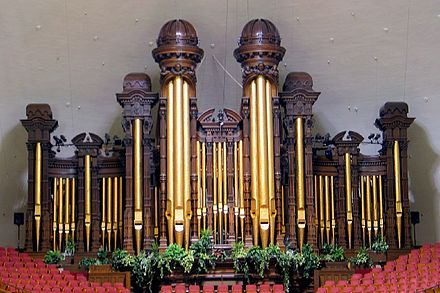
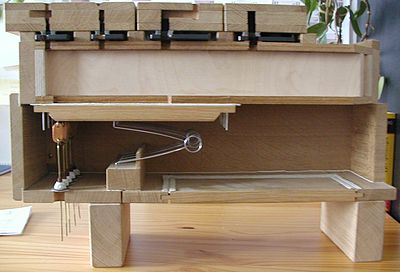
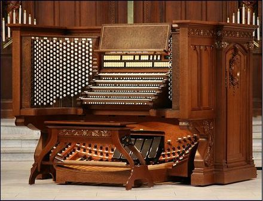

A pipe organ contains one or more sets of pipes, a wind system, and one or more keyboards. The pipes produce sound when pressurized air produced by the wind system passes through them. An action connects the keyboards to the pipes. Stops allow the organist to control which ranks of pipes sound at a given time. The organist operates the stops and the keyboards from the console.
Pipes
 Organ pipes are made from either wood or metal[52] and produce sound ("speak") when air under pressure ("wind") is directed through them.[53] As one pipe produces a single pitch, multiple pipes are necessary to accommodate the musical scale. The greater the length of the pipe, the lower its resulting pitch will be.[54] The timbre and volume of the sound produced by a pipe depends on the volume of air delivered to the pipe and the manner in which it is constructed and voiced, the latter adjusted by the builder to produce the desired tone and volume. Hence a pipe's volume cannot be readily changed while playing.[54]
Organ pipes are divided into flue pipes and reed pipes according to their design and timbre. Flue pipes produce sound by forcing air through a fipple, like that of a recorder, whereas reed pipes produce sound via a beating reed, like that of a clarinet or saxophone.[55]
Pipes are arranged by timbre and pitch into ranks. A rank is a set of pipes of the same timbre but multiple pitches (one for each note on the keyboard), which is mounted (usually vertically) onto a windchest.[56] The stop mechanism admits air to each rank. For a given pipe to sound, the stop governing the pipe's rank must be engaged, and the key corresponding to its pitch must be depressed. Ranks of pipes are organized into groups called divisions. Each division generally is played from its own keyboard and conceptually comprises an individual instrument within the organ.[57]
Action
An organ contains two actions, or systems of moving parts. When a key is depressed, the key action admits wind into a pipe. The stop action allows the organist to control which ranks are engaged. An action may be mechanical, pneumatic, or electrical (or some combination of these, such as electro-pneumatic action).[58] The key action is independent of the stop action, allowing an organ to combine a mechanical key action along with an electric stop action.
A key action which physically connects the keys and the windchests is a mechanical or tracker action. Connection is achieved through a series of rods called trackers. When the organist depresses a key, the corresponding tracker pulls open its pallet, allowing wind to enter the pipe.[59]
In a mechanical stop action, each stop control operates a valve for a whole rank of pipes. When the organist selects a stop, the valve allows wind to reach the selected rank.[56] This control was at first a draw stop knob, which the organist selects by pulling (or drawing) toward himself/herself. This is the origin of the idiom "to pull out all the stops".[60] More modern stop selectors, utilized in electric actions, are tilting tablets or rocker tabs.
Tracker action has been used from antiquity to modern times. Before the pallet opens, wind pressure augments tension of the pallet spring, but once the pallet opens, only the spring tension is felt at the key. This provides a "breakaway" feel.[61]
A later development was the tubular-pneumatic action, which uses changes of pressure within lead tubing to operate pneumatic valves throughout the instrument. This allowed a lighter touch, and more flexibility in the location of the console, within a roughly 50-foot (15-m) limit. This type of construction was used in the late 19th century to early 20th century, and has had only rare application since the 1920s.[62]
 A more recent development is the electric action which uses low voltage DC to control the key and/or stop mechanisms. Electricity may control the action indirectly through air pressure valves (pneumatics), in which case the action is electro-pneumatic. In such actions, an electromagnet attracts a small pilot valve which lets wind go to a bellows ("pneumatic") which opens the pallet. When electricity operates the action directly without the assistance of pneumatics, it is commonly referred to as direct electric action.[62] In this type, the electromagnet's armature carries a disc pallet.
When electrical wiring alone is used to connect the console to the windchest, electric actions allow the console to be separated at any practical distance from the rest of the organ, and to be movable.[63] Electric stop actions can be controlled at the console by stop knobs, by pivoted tilting tablets, or rocker tabs. These are simple switches, like wall switches for room lights. Some may include electromagnets for setting or resetting when combinations are selected.
The most innovations in organ control systems connect the console and windchests via narrow data cables instead of the larger bundles of cables. Embedded computers in the console and near the windchests communicate with each other via various complex multiplexing syntaxes, comparable to MIDI.
Wind System
The wind system consists of the parts that produce, store, and deliver wind to the pipes. Pipe organ wind pressures are on the order of 0.10 psi (0.69 kPa). Organ builders traditionally measure organ wind using a water U-tube manometer, which gives the pressure as the difference in water levels in the two legs of the manometer. The difference in water level is proportional to the difference in pressure between the wind being measured and the atmosphere.[64] The 0.10 psi above would register as 2.75 inches of water (70 mmAq). An Italian organ from the Renaissance period may be on only 2.2 inches (56 mm),[65] while (in the extreme) solo stops in some large 20th-century organs may require up to 50 inches (1,300 mm). In isolated, extreme cases, some stops have been voiced on 100 inches (2,500 mm).[66]
With the exception of water organs, playing the organ before the invention of motors required at least one person to operate the bellows. When signaled by the organist, a calcant would operate a set of bellows, supplying the organ with wind.[67] Because calcants were expensive, organists would usually practise on other instruments such as the clavichord or harpsichord.[68] By the mid-19th-century bellows were also being operated by water engines,[69] steam engines or gasoline engines.[70][71][72] Starting in the 1860s bellows were gradually replaced by rotating turbines which were later directly connected to electrical motors.[73] This made it possible for organists to practice regularly on the organ. Most organs, both new and historic, have electric blowers, although some can still be operated manually.[74] The wind supplied is stored in one or more regulators to maintain a constant pressure in the windchests until the action allows it to flow into the pipes.[75]
Stops
Each stop usually controls one rank of pipes, although mixtures and undulating stops (such as the Voix céleste) control multiple ranks.[76] The name of the stop reflects not only the stop's timbre and construction, but also the style of the organ in which it resides. For example, the names on an organ built in the north German Baroque style generally will be derived from the German language, while the names of similar stops on an organ in the French Romantic style will usually be French. Most countries tend to use only their own languages for stop nomenclature. English-speaking nations as well as Japan are more receptive to foreign nomenclature.[citation needed] Stop names are not standardized: two otherwise identical stops from different organs may have different names.[77]
To facilitate a large range of timbres, organ stops exist at different pitch levels. A stop that sounds at unison pitch when a key is depressed is referred to as being at 8′ (pronounced "eight-foot") pitch. This refers to the speaking length of the lowest-sounding pipe in that rank, which is approximately eight feet (2.4 m). For the same reason, a stop that sounds an octave higher is at 4′ pitch, and one that sounds two octaves higher is at 2′ pitch. Likewise, a stop that sounds an octave lower than unison pitch is at 16′ pitch, and one that sounds two octaves lower is at 32′ pitch.[76] Stops of different pitch levels are designed to be played simultaneously.
The label on a stop knob or rocker tab indicates the stop's name and its pitch in feet. Stops that control multiple ranks display a Roman numeral indicating the number of ranks present, instead of pitch.[78] Thus, a stop labelled "Open Diapason 8′ " is a single-rank diapason stop sounding at 8′ pitch. A stop labelled "Mixture V" is a five-rank mixture.
Sometimes, a single rank of pipes may be able to be controlled by several stops, allowing the rank to be played at multiple pitches or on multiple manuals. Such a rank is said to be unified or borrowed. For example, an 8′ Diapason rank may also be made available as a 4′ Octave. When both of these stops are selected and a key (for example, c′)[79] is pressed, two pipes of the same rank will sound: the pipe normally corresponding to the key played (c′), and the pipe one octave above that (c′′). Because the 8′ rank does not have enough pipes to sound the top octave of the keyboard at 4′ pitch, it is common for an extra octave of pipes used only for the borrowed 4′ stop to be added. In this case, the full rank of pipes (now an extended rank) is one octave longer than the keyboard.[80]
Special unpitched stops also appear in some organs. Among these are the Zimbelstern (a wheel of rotating bells), the nightingale (a pipe submerged in a small pool of water, creating the sound of a bird warbling when wind is admitted),[81] and the effet d'orage ("thunder effect", a device that sounds the lowest bass pipes simultaneously). Standard orchestral percussion instruments such as the drum, chimes, celesta, and harp have also been imitated in organ building.[82]
Console
The controls available to the organist, including the keyboards, couplers, expression pedals, stops, and registration aids are accessed from the console.[84] The console is either built into the organ case or detached from it.
Keyboards

Keyboards played by the hands are known as manuals (from the Latin manus, meaning "hand"). The keyboard played by the feet is a pedalboard. Every organ has at least one manual (most have two or more), and most have a pedalboard. Each keyboard is named for a particular division of the organ (a group of ranks) and generally controls only the stops from that division. The range of the keyboards has varied widely across time and between countries. Most current specifications call for two or more manuals with sixty-one notes (five octaves, from C to c″″) and a pedalboard with thirty or thirty-two notes (two and a half octaves, from C to f′ or g′).[79][85]
Couplers
A coupler allows the stops of one division to be played from the keyboard of another division. For example, a coupler labelled "Swell to Great" allows the stops drawn in the Swell division to be played on the Great manual. This coupler is a unison coupler, because it causes the pipes of the Swell division to sound at the same pitch as the keys played on the Great manual. Coupling allows stops from different divisions to be combined to create various tonal effects. It also allows every stop of the organ to be played simultaneously from one manual.[86]
Octave couplers, which add the pipes an octave above (super-octave) or below (sub-octave) each note that is played, may operate on one division only (for example, the Swell super octave, which adds the octave above what is being played on the Swell to itself), or act as a coupler to another keyboard (for example, the Swell super-octave to Great, which adds to the Great manual the ranks of the Swell division an octave above what is being played).[86]
In addition, larger organs may use unison off couplers, which prevent the stops pulled in a particular division from sounding at their normal pitch. These can be used in combination with octave couplers to create innovative aural effects, and can also be used to rearrange the order of the manuals to make specific pieces easier to play.[86]
Enclosure and Expression Pedals
Enclosure refers to a system that allows for the control of volume without requiring the addition or subtraction of stops. In a two-manual organ with Great and Swell divisions, the Swell will be enclosed. In larger organs, parts or all of the Choir and Solo divisions may also be enclosed.[88] The pipes of an enclosed division are placed in a chamber generally called the swell box. At least one side of the box is constructed from horizontal or vertical palettes known as swell shades, which operate in a similar way to Venetian blinds; their position can be adjusted from the console. When the swell shades are open, more sound is heard than when they are closed.[88] Sometimes the shades are exposed, but they are often concealed behind a row of facade-pipes or a grill.
The most common method of controlling the louvers is the balanced swell pedal. This device is usually placed above the centre of the pedalboard and is configured to rotate away from the organist from a near-vertical position (in which the shades are closed) to a near-horizontal position (in which the shades are open).[89] An organ may also have a similar-looking crescendo pedal, found alongside any expression pedals. Pressing the crescendo pedal forward cumulatively activates the stops of the organ, starting with the softest and ending with the loudest; pressing it backwards reverses this process.[90]
Combination Action
Organ stops can be combined in many permutations, resulting in a great variety of sounds. A combination action can be used to switch instantly from one combination of stops (called a registration) to another. Combination actions feature small buttons called pistons that can be pressed by the organist, generally located beneath the keys of each manual (thumb pistons) or above the pedalboard (toe pistons).[91] The pistons may be divisional (affecting only a single division) or general (affecting all the divisions), and are either preset by the organ builder or can be altered by the organist. Modern combination actions operate via computer memory, and can store several channels of registrations.[92]
Casing
The pipes, action, and wind system are almost always contained in a case, the design of which also may incorporate the console. The case blends the organ's sound and aids in projecting it into the room.[93] The case is often designed to complement the building's architectural style and it may contain ornamental carvings and other decorations. The visible portion of the case, called the façade, will most often contain pipes, which may be either sounding pipes or dummy pipes solely for decoration. The façade pipes may be plain, burnished, gilded, or painted[94] and are usually referred to as (en) montre within the context of the French organ school.[95][96]
Organ cases occasionally feature a few ranks of pipes protruding horizontally from the case in the manner of a row of trumpets. These are referred to as pipes en chamade and are particularly common in organs of the Iberian peninsula and large 20th-century instruments.[97]
Many organs, particularly those built in the early 20th century, are contained in one or more rooms called organ chambers. Because sound does not project from a chamber into the room as clearly as from a freestanding organ case, enchambered organs may sound muffled and distant.[98] For this reason, some modern builders, particularly those building instruments specializing in polyphony rather than Romantic compositions, avoid this unless the architecture of the room makes it necessary.
Tuning and Regulation
The goal of tuning a pipe organ is to adjust the pitch of each pipe so that they all sound in tune with each other. How the pitch of each pipe is adjusted depends on the type and construction of that pipe.
Regulation adjusts the action so that all pipes sound correctly. If the regulation is wrongly set, the keys may be at different heights, some pipes may sound when the keys are not pressed (a "cipher"), or pipes may not sound when a key is pressed. Tracker action, for example in the organ of Cradley Heath Baptist Church, includes adjustment nuts on the wire ends of the wooden trackers, which have the effect of changing the effective length of each tracker.